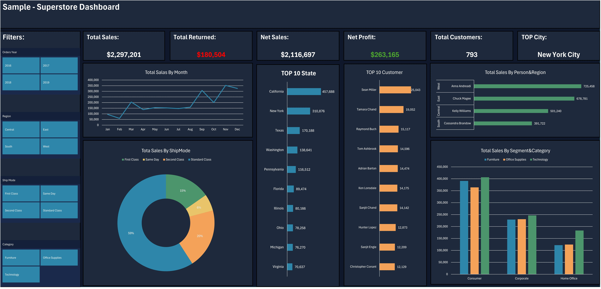
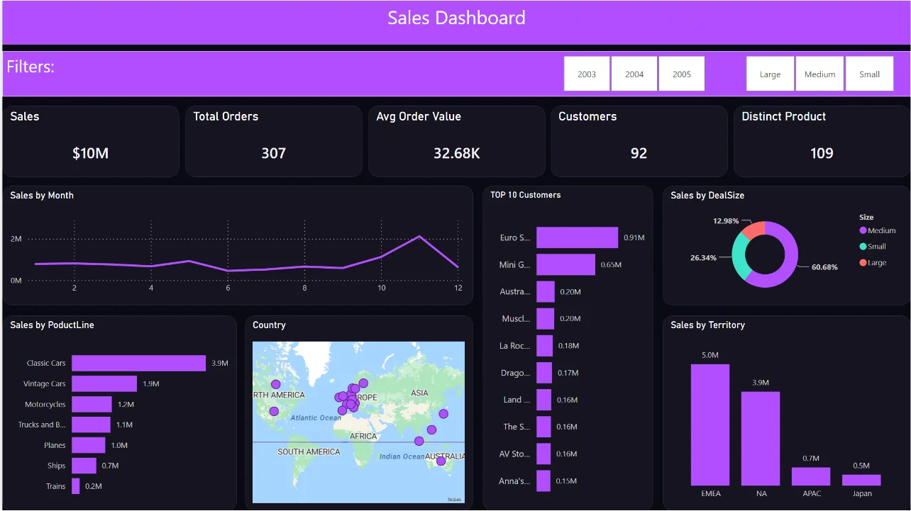
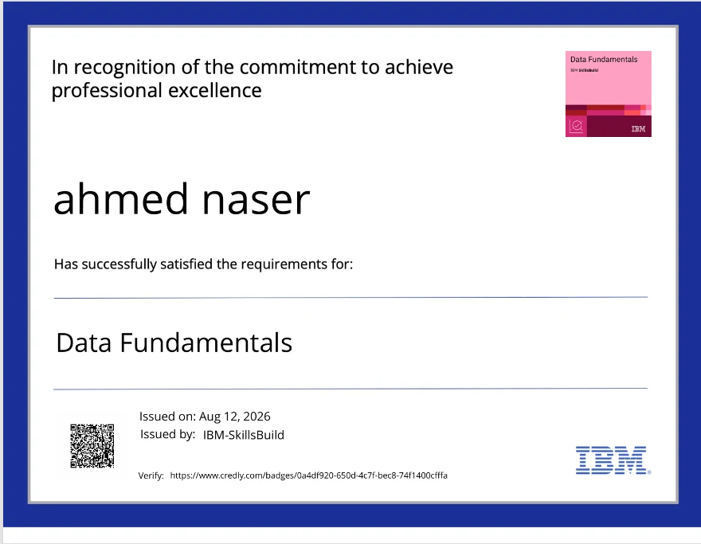

Understand
Explore the raw tables, business context, missing fields, and the questions the dashboard needs to answer.
I started my journey in Computer Science curious about how businesses actually make decisions — and I found the answer in data. That curiosity turned into a genuine passion: transforming complex numbers into simple stories any business owner can understand and act on.
Today, as a Computer Science & AI student specializing in Data Analytics and a Data Analytics Trainee at DEPI, I clean raw datasets, build interactive Power BI dashboards, and use Excel, SQL, and Python to uncover the story hidden behind the numbers.
I find and fix missing values, duplicates, and inconsistent records so your data is accurate and ready for real analysis — not guesswork.
I build interactive dashboards with KPI cards, regional visuals, and slicers so you can explore your business data yourself, in real time.
I turn raw spreadsheets into Pivot Tables, Pivot Charts, and Slicers that surface trends at a glance instead of buried in rows of numbers.
I query and organize structured data efficiently to answer specific business questions directly from your database.
I use Python for data cleaning and analysis on larger or more complex datasets that go beyond spreadsheet limits.
Clear, interactive Excel dashboards with Pivot Tables, Pivot Charts, and Slicers — see your sales, operations, or performance data at a glance.
Interactive Power BI dashboards with KPI cards, regional visuals, and filters, giving you a live view of your business to support faster decisions.
Messy datasets cleaned and structured — missing values, duplicates, and formatting issues fixed — so your data is ready to analyze.

Cleaned and modeled a ~10,000-row retail dataset spread across three related tables, then built a fully interactive Excel dashboard on top of it.

Built a complete Power BI dashboard from a ~3,000-row dataset that didn't even have a sales column to begin with.

Explore the raw tables, business context, missing fields, and the questions the dashboard needs to answer.
Use Power Query and structured transformations to handle missing values, duplicates, formatting, and preparation.
Separate facts and dimensions where appropriate and build clear relationships before visual design.
Create reusable measures and analysis logic so the numbers stay consistent across the dashboard.
Turn the analysis into focused KPI cards, trends, comparisons, rankings, and filters that answer business questions.
Document the decisions, surface insights, and make the final output easy for another person to understand and use.
Data preparation and modeling come before visual polish, so the dashboard has a dependable structure underneath it.
KPIs, trends, rankings, categories, geography, and filters are selected to make the analysis easier to use and explain.
When a value is uncertain, it should be verified or clearly documented—not quietly guessed.
Data cleaning and preparation, Excel dashboards, Power BI dashboards, data modeling, visualization, and analysis based on the tools and experience presented on this portfolio.
Yes. Cleaning and structuring messy spreadsheet data is one of the core workflows demonstrated in the featured projects.
For the projects where files are available, the portfolio links to the project resources. For new client work, the deliverables can be agreed before the project starts.
Yes. The featured Power BI case study demonstrates the workflow from raw fields through cleaning, metric construction, modeling, DAX, and dashboard design.